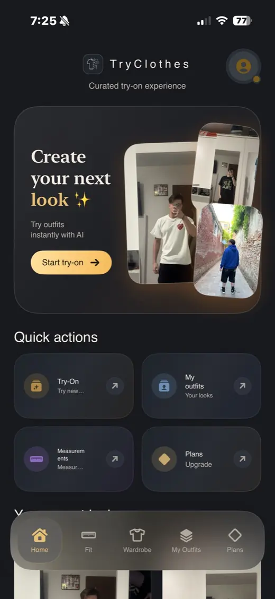

AI pentru haine
Experiența este construită pentru articole vestimentare, ținute și combinații de outfit, nu pentru editări generice.
Fashion technology
TryClothes folosește AI pentru a transforma proba hainelor într-o experiență vizuală rapidă. Încarci o poză, alegi hainele dorite și vezi un preview care te ajută să decizi dacă outfit-ul merită cumpărat.

AI try-on
Căutările pentru AI clothes try-on și virtual try-on cresc fiindcă oamenii vor să vadă hainele în context, nu doar pe modelul din magazin. TryClothes traduce această nevoie într-un produs premium pentru shopping online.
Experiența este construită pentru articole vestimentare, ținute și combinații de outfit, nu pentru editări generice.
TryClothes este gândit ca produs de fashion technology pe telefon, rapid de folosit în timp ce faci shopping.
Scopul nu este doar să vezi o imagine frumoasă, ci să compari ținute și să alegi mai informat.
Keyword intent
De obicei caută o metodă prin care pot testa haine virtual, fie pentru cumpărături personale, fie pentru outfit inspiration, fie pentru a reduce retururile.
FAQ
AI clothes try-on este o experiență virtuală care te ajută să vezi cum pot arăta hainele sau outfit-urile pe corp înainte de cumpărare.
Da. TryClothes folosește texte și experiență localizată pentru utilizatori români, dar include și termenii internaționali folosiți în fashion tech.
Da. Poți testa vizual idei de outfit și poți decide ce combinații merită păstrate sau comandate.
Explorează